pipeline
linear work from input to output
Open the style showcase for one rendered case per visual style.

linear work from input to output
observe, decide, act, learn
central coordinator with connected capabilities
separate interface, domain, and data layers
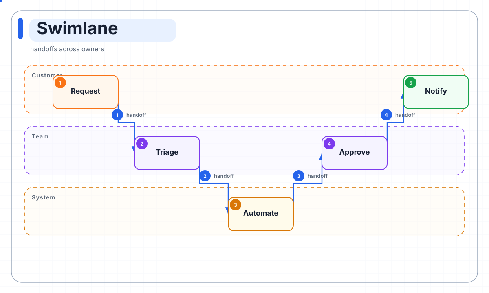
handoffs across owners
two options with shared decision criteria
two-by-two prioritization grid
milestones across a release window
vertical dependency layers
narrow broad input into qualified output
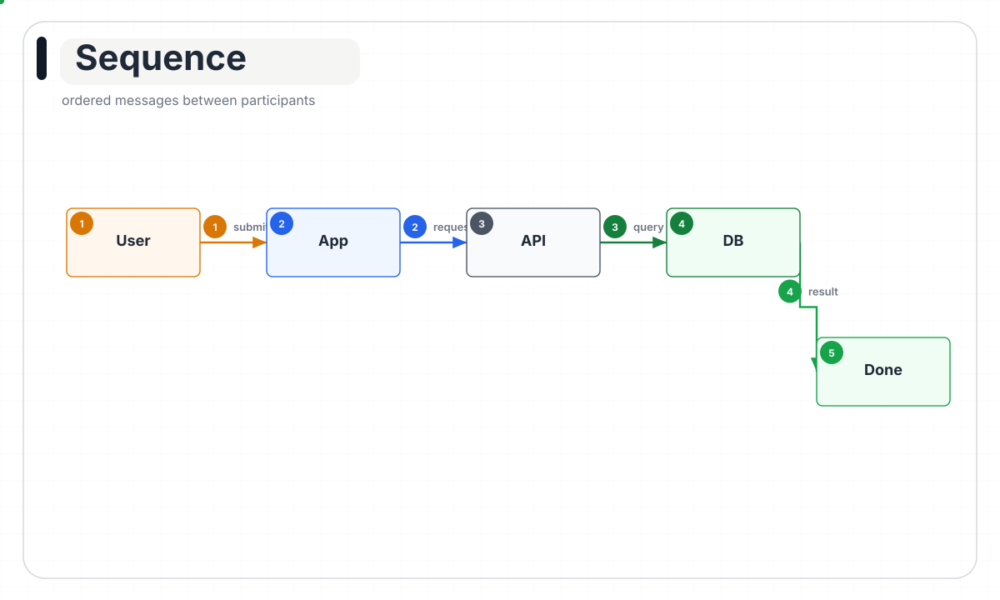
ordered messages between participants
entities and relationships
distributed nodes with cross-links
planning, tools, memory, and grounded output